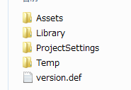

アセットバンドルについて¶
CAssetBundleMgrは最初にversion.unity3dを読み込みます。 本項目では、このversion.unity3dの仕組みについて説明します。
version.unity3dが作られるタイミング¶
- [Tools]->[KsSoft]->[Export Binary Data]
- [Tools]->[KsSoft]->[Export Window Resource]
何らかのアセットバンドルを作成、更新したときに自動的に更新されます。
これらツール内では、次の関数が呼ばれています。
ExportVersion.export(BuildTarget eTarget);
version.unity3dには、export前の以下の情報を持っています。
- 存在していたアセットバンドル
- 各アセットバンドルのMD5
- 各アセットバンドルのバージョン番号
- どのアセットバンドルが読み込み後、常駐するかどうかの情報
この関数を呼び出すことによって、ビルドターゲットに対応したフォルダ内のアセットバンドルのMD5と比較して変更が一つでもあった時は、version.unity3dを再構築しています。
この時、変更のかかっていたファイルに対して、現在時刻から生成したバージョン番号を与えています。
これによって、version.unity3dを読み込むだけで、次のことが可能になっています。
- アセットバンドルに何が存在しているか事前にわかる
- LoadFromCacheOrDownloadに使う引数であるversionを変更のあったファイルに対してのみ新しく割り振ることができるため、更新ファイルのみをダウンロードすることが可能になる
注釈
自前でアセットバンドルを作りたいときは、スクリプトの最後に、version.unity3dをexportしてあげることを忘れないでください。
アセットバンドルの常駐¶
ダウンロードしたアセットを常駐するようにversion.unity3d更新時に設定可能です。
最初にAssetsフォルダと同じ場所に、version.defというファイルを作ってください。

#Texture for Window Resource
100_000_00001 = REMAIN:1;
#SoundEffect for 2D
052_000_00000 = REMAIN:1;
#SoundEffect for 3D
053_000_00000 = REMAIN:1;
このように指定したアセットバンドルは、読み込み後に常駐することになります。
version.txt¶
version.txtは、あくまでもデバッグの為に可視化した、version.unity3dです。
エキスポート時/ランタイム時には不必要なファイルです。